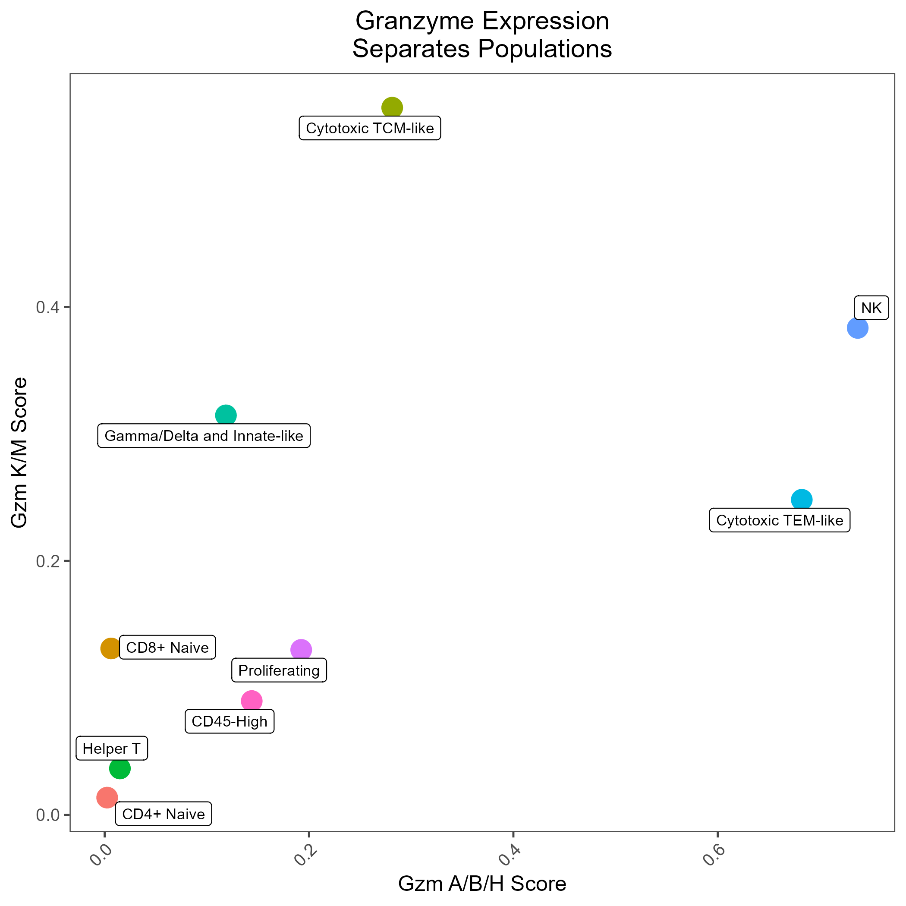

T Cell Type/State Scoring
TCellDifferentiation.RmdThis vignette provides examples on how to use the rhesus macaque cell type scoring models generated and provided by RIRA. RIRA’s data was generated and labeled using the following process
Getting Started
First download the data as a Seurat object (or use your own input data):
seuratObj <- DownloadFromGEO(subset = 'T_NK', outfile = 'RIRA_T_NK.rds')These are the cell labels used in the RIRA manuscript, also provided in the seurat object:
Seurat::DimPlot(seuratObj, group.by = 'TCellSubtype')
Modeling T Cell Naive-Effector Differentiation
Using sorted T cell data, we empirically defined a trajectory (gene component) that models T cell naive-to-memory differentiation, which can be used to categorize cells according to this property. This can be imputed into any seurat object, following the example below.
A practical usage of this score could be to subset/gate a dataset
seuratObj <- ScoreUsingSavedComponent(seuratObj, componentOrName = 'Tcell_EffectorDifferentiation', fieldName = 'EDS')
UMAP_ED <- FeaturePlot(seuratObj, features = 'Tcell_EffectorDifferentiation', min.cutoff = 'q02', max.cutoff = 'q98') +
ggtitle('EDS Is a Trajectory Modeling\nNaive-Effector Differentiation') +
scale_color_gradientn(
colors = c("navy", "dodgerblue", "yellow", "gold", "orange", "red", "maroon")
) +
NoLegend()
Pheno <- VlnPlot(seuratObj, features = 'Tcell_EffectorDifferentiation', group.by = 'TCellSubtype', pt.size = 0) + NoLegend() + ggtitle('EDS As Tool\nFor Gating') +
geom_hline(yintercept = 6, linetype = 'dashed') +
geom_hline(yintercept = 2, linetype = 'dashed') +
labs(x = '')
P <- UMAP_ED + Pheno + patchwork::plot_layout(ncol = 2)
PMemory and Cytotoxic Differentiation
As might be predicted, the RNA features that are most robust at distinguishing lineage/state are not always identical to the canonical protein markers. In the RIRA manuscript, we demonstrated the expression of S100A proteins was correlated with naive-memory differentiation, and that the pattern of granzyme expression was also correlated with differentiation, with T-central memory cells being skewed toward granzymes K/M, and T effector memory being skewed toward granzymes B/H.
The code below demonstrate
seuratObj <- UCell::AddModuleScore_UCell(seuratObj, features = list(
TCellMemory = GetGeneSet('TCellMemoryS100'),
Cytotoxicity.GzmABH = GetGeneSet('Cytotoxicity.GzmABH'),
Cytotoxicity.GzmKM = GetGeneSet('Cytotoxicity.GzmKM')
))
dat <- seuratObj@meta.data %>%
group_by(TCellSubtype) %>%
summarize(
Cytotoxicity.GzmKM_UCell = mean(Cytotoxicity.GzmKM_UCell),
Cytotoxicity.GzmABH_UCell = mean(Cytotoxicity.GzmABH_UCell)
)
GZM_Plot <- ggplot(dat, aes(x = Cytotoxicity.GzmABH_UCell, y = Cytotoxicity.GzmKM_UCell, color = TCellSubtype)) +
geom_point(size = 5) +
ggrepel::geom_label_repel(aes(label = TCellSubtype), color = 'black', size = 3, max.overlaps = 3) +
egg::theme_article(base_size = 12) +
theme(
legend.position = 'none',
plot.title = element_text(hjust = 0.5),
axis.text.x = element_text(angle = 45, hjust = 1)
) +
labs(
title = 'Granzyme Expression\nSeparates Populations',
x = 'Avg. Gzm A/B/H Score',
y = 'Avg. Gzm K/M Score'
)